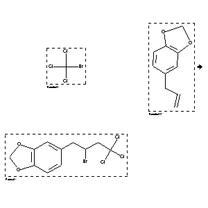

|  |
| FA | RX(1); FLST(1); RX(1) |
Reaction (1 of 1)
| Reaction ID | 1767838 |
| Reactant BRN | 1732543; 136380 |
| Reactant | bromo-trichloro-methane; 5-allyl-benzo[1,3]dioxole |
| Product BRN | 5030224 |
| Product | 1,2-methylenedioxy-4-(2-bromo-4,4,4-trichlorobutyl)benzene |
| No. of Reaction Details | 1 |
Reaction Details (1 of 1)
| Reaction Classification | Preparation |
| Yield | 52 percent (BRN=5030224) |
| Reagent | K2CO3 |
| Catalyst | Pd(OAc)2, PPh3 |
| Solvent | benzene |
| Time | 9 hour(s) |
| Temperature | 80 |
| Other Conditions | CO atmosphere |
| Citation Pointer | 5609012; Journal; Tsuji, Jiro; Sato, Koji; Nagashima, Hideo; TETRAB; Tetrahedron; EN; 41; 2; 1985; 393-398; |
Reference (1 of 1)
| Citation Number | 5609012 |
| Document Type | Journal |
| Authors | Tsuji, Jiro; Sato, Koji; Nagashima, Hideo |
| CODEN | TETRAB |
| Journal Title | Tetrahedron |
| Language Code | EN |
| (Series) Volume | 41 |
| Number | 2 |
| Publication Year | 1985 |
| Page | 393-398 |